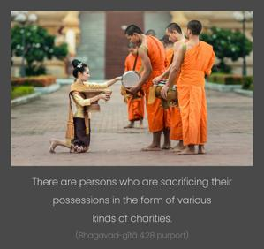
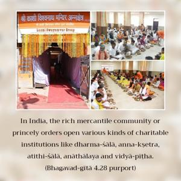
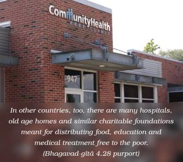
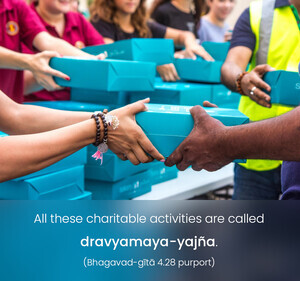
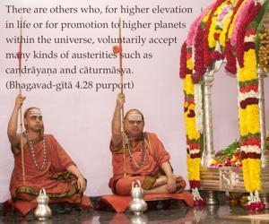
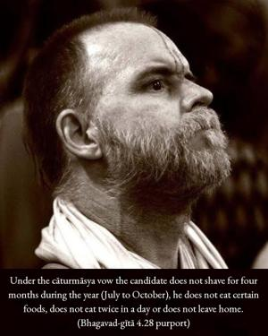

Having accepted strict vows, some become enlightened by sacrificing their possessions, and others by performing severe austerities, by practicing the yoga of eightfold mysticism, or by studying the Vedas to advance in transcendental knowledge.






These sacrifices may be fitted into various divisions. There are persons who are sacrificing their possessions in the form of various kinds of charities. In India, the rich mercantile community or princely orders open various kinds of charitable institutions like dharma-śālā, anna-kṣetra, atithi-śālā, anāthālaya and vidyā-pīṭha. In other countries, too, there are many hospitals, old age homes and similar charitable foundations meant for distributing food, education and medical treatment free to the poor. All these charitable activities are called dravyamaya-yajña. There are others who, for higher elevation in life or for promotion to higher planets within the universe, voluntarily accept many kinds of austerities such as candrāyaṇa and cāturmāsya. These processes entail severe vows for conducting life under certain rigid rules. For example, under the cāturmāsya vow the candidate does not shave for four months during the year (July to October), he does not eat certain foods, does not eat twice in a day or does not leave home. Such sacrifice of the comforts of life is called tapomaya-yajña. There are still others who engage themselves in different kinds of mystic yogas like the Patañjali system (for merging into the existence of the Absolute), or haṭha-yoga or aṣṭāṅga-yoga (for particular perfections). And some travel to all the sanctified places of pilgrimage. All these practices are called yoga-yajña, sacrifice for a certain type of perfection in the material world. There are others who engage themselves in the studies of different Vedic literatures, specifically the Upaniṣads and Vedānta-sūtras, or the Sāṅkhya philosophy. All of these are called svādhyāya-yajña, or engagement in the sacrifice of studies. All these yogīs are faithfully engaged in different types of sacrifice and are seeking a higher status of life. Kṛṣṇa consciousness, however, is different from these because it is the direct service of the Supreme Lord. Kṛṣṇa consciousness cannot be attained by any one of the above-mentioned types of sacrifice but can be attained only by the mercy of the Lord and His bona fide devotees. Therefore, Kṛṣṇa consciousness is transcendental.